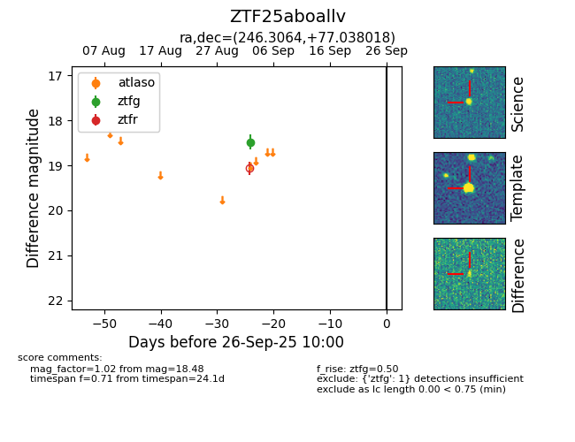

FINK: ZTF25aboallv
Lasair: ZTF25aboallv
ALeRCE: ZTF25aboallv
ZTF25aboallv (ztf,fink)
equatorial (ra, dec) = (246.3064,+77.03802)
galactic (l, b) = (110.3364,+34.28135)

last ztfg=18.48
1 ztfg detections